OUTPUT SHAFT > REASSEMBLY |
| 1. INSTALL NO. 2 TRANSMISSION HUB SLEEVE |
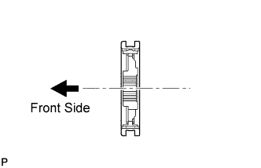 |
Apply a light coat of gear oil to the No. 2 transmission hub sleeve and No. 2 transmission clutch hub.
Install the No. 2 transmission hub sleeve and 3 shifting keys to the No. 2 transmission clutch hub.
 |
Insert the 2 springs under the shifting keys.
| 2. INSTALL NO. 3 TRANSMISSION HUB SLEEVE |
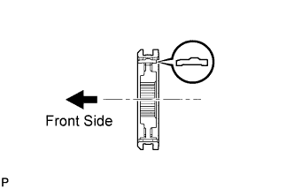 |
Apply a light coat of gear oil to the No. 3 transmission hub sleeve and No. 3 transmission clutch hub.
Install the No. 3 transmission hub sleeve and 3 shifting keys to the No. 3 transmission clutch hub.
|
Insert the 2 springs under the shifting keys.
| 3. INSTALL NO. 1 TRANSMISSION HUB SLEEVE |
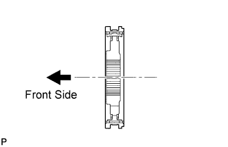 |
Apply a light coat of gear oil to the No. 1 transmission hub sleeve and No. 1 transmission clutch hub.
Install the No. 1 transmission hub sleeve and 3 shifting keys to the No. 1 transmission clutch hub.
|
Insert the 2 springs under the shifting keys.
| 4. INSTALL 5TH COUNTER GEAR BEARING |
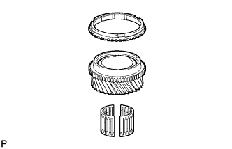 |
Coat the 5th counter gear bearing with gear oil, then install it to the 5th gear.
| 5. INSTALL 5TH GEAR |
Coat the 5th gear and No. 3 synchronizer ring with gear oil, and set them onto the output shaft.
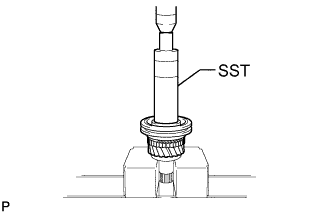 |
Using SST and a press, install the 5th gear, No. 3 synchronizer ring and transmission hub sleeve to the output shaft.
Check that the 5th gear, No. 3 synchronizer ring, and transmission hub sleeve move smoothly.
| 6. INSTALL NO. 3 TRANSMISSION CLUTCH HUB SHAFT SNAP RING |
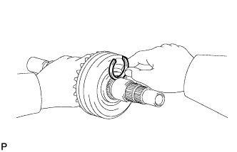 |
Select a new snap ring that will allow minimum clearance.
| Part No. | Thickness | Mark |
| 90520-34018 | 2.40 to 2.45 mm (0.0945 to 0.0965 in.) | A |
| 90520-34019 | 2.45 to 2.50 mm (0.0965 to 0.0984 in.) | B |
| 90520-34020 | 2.50 to 2.55 mm (0.0984 to 0.100 in.) | C |
| 90520-34021 | 2.55 to 2.60 mm (0.100 to 0.102 in.) | D |
| 90520-34022 | 2.60 to 2.65 mm (0.102 to 0.104 in.) | E |
| 90520-34023 | 2.65 to 2.70 mm (0.104 to 0.106 in.) | F |
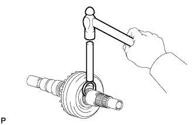 |
Using a brass bar and hammer, install the snap ring to the output shaft.
| 7. INSTALL 3RD GEAR NEEDLE ROLLER BEARING |
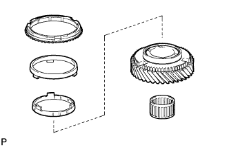 |
Coat the 3rd gear needle roller bearing with gear oil, and install it to the 3rd gear.
| 8. INSTALL 3RD GEAR |
Coat the 3rd gear and No. 3 synchronizer ring set with gear oil, and set them onto the output shaft.
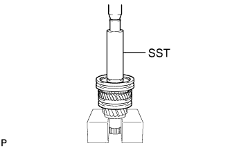 |
Using SST and a press, install the 3rd gear, No. 3 synchronizer ring set and transmission hub sleeve to the output shaft.
Check that the 3rd gear, No. 3 synchronizer ring set, and transmission hub sleeve move smoothly.
| 9. INSTALL NO. 2 CLUTCH HUB SETTING SHAFT SNAP RING |
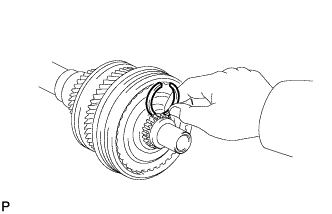 |
Select a new snap ring that will allow minimum clearance.
| Part No. | Thickness | Mark |
| 90520-28054 | 1.90 to 1.95 mm (0.0748 to 0.0768 in.) | 4 |
| 90520-28055 | 1.95 to 2.00 mm (0.0768 to 0.0787 in.) | 5 |
| 90520-28056 | 2.00 to 2.05 mm (0.0787 to 0.0807 in.) | 6 |
| 90520-28057 | 2.05 to 2.10 mm (0.0807 to 0.0827 in.) | 7 |
| 90520-28058 | 2.10 to 2.15 mm (0.0827 to 0.0847 in.) | 8 |
| 90520-28059 | 2.15 to 2.20 mm (0.0847 to 0.0866 in.) | 9 |
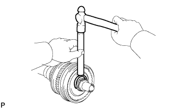 |
Using a snap ring expander, install the snap ring to the output shaft.
| 10. INSTALL 2ND GEAR NEEDLE ROLLER BEARING |
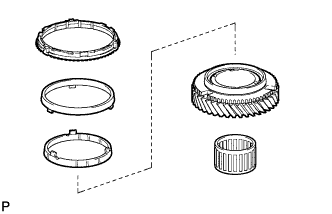 |
Coat the 2nd gear needle roller bearing with gear oil, and install it to the output shaft.
| 11. INSTALL 2ND GEAR |
Coat the 2nd gear and No. 2 synchronizer ring set with gear oil, then install them to the output shaft.
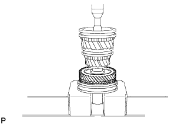 |
Using a press, install the 2nd gear, No. 2 synchronizer ring set and transmission hub sleeve to the output shaft.
Check that the 2nd gear, No. 2 synchronizer ring set, and transmission hub sleeve move smoothly.
| 12. INSTALL NO. 1 CLUTCH HUB SHAFT SNAP RING |
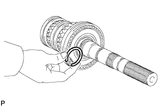 |
Select a new snap ring that will allow minimum clearance.
| Part No. | Thickness | Mark |
| 90520-46004 | 2.90 to 2.95 mm (0.114 to 0.116 in.) | A |
| 90520-46005 | 2.95 to 3.00 mm (0.116 to 0.118 in.) | B |
| 90520-46006 | 3.00 to 3.05 mm (0.118 to 0.120 in.) | C |
| 90520-46007 | 3.05 to 3.10 mm (0.120 to 0.122 in.) | D |
| 90520-46008 | 3.10 to 3.15 mm (0.122 to 0.124 in.) | E |
| 90520-46009 | 3.15 to 3.20 mm (0.124 to 0.126 in.) | F |
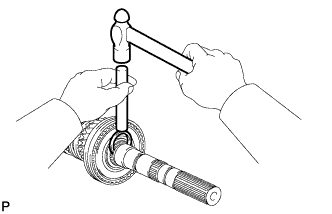 |
Using a brass bar and a hammer, install the snap ring to the output shaft.
| 13. INSTALL 1ST GEAR NEEDLE ROLLER BEARING |
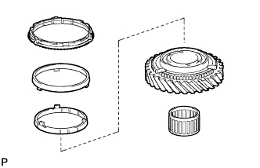 |
Coat the 1st gear needle roller bearing with gear oil, and install it to the output shaft.
| 14. INSTALL 1ST GEAR |
Coat the 1st gear and No. 1 synchronizer ring set with gear oil, and set them onto the output shaft.
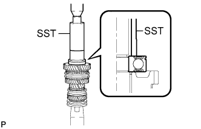 |
Using SST and press, install the 1st gear, No. 1 synchronizer ring set, and output shaft rear bearing to the output shaft.
Check that the transmission hub sleeve, 1st gear and No. 1 synchronizer ring set move smoothly.
| 15. INSTALL REVERSE GEAR SNAP RING |
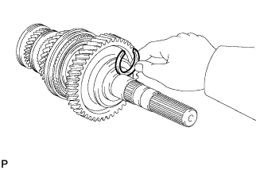 |
Select a new snap ring that will allow minimum clearance.
| Part No. | Thickness | Mark |
| 90520-41006 | 2.40 to 2.45 mm (0.0945 to 0.0965 in.) | A |
| 90520-41007 | 2.45 to 2.50 mm (0.0965 to 0.0984 in.) | B |
| 90520-41008 | 2.50 to 2.55 mm (0.0984 to 0.100 in.) | C |
| 90520-41009 | 2.55 to 2.60 mm (0.100 to 0.102 in.) | D |
| 90520-41010 | 2.60 to 2.65 mm (0.102 to 0.104 in.) | E |
| 90520-41011 | 2.65 to 2.70 mm (0.104 to 0.106 in.) | F |
| 90520-41012 | 2.70 to 2.75 mm (0.106 to 0.108 in.) | G |
| 90520-41013 | 2.75 to 2.80 mm (0.108 to 0.110 in.) | H |
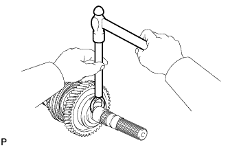 |
Using a brass bar and a hammer, install the snap ring to the output shaft.
| 16. INSPECT 5TH GEAR THRUST CLEARANCE |
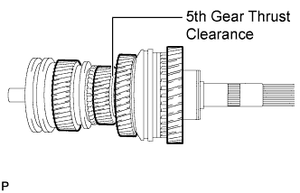 |
Using a feeler gauge, measure the 5th gear thrust clearance.
| 17. INSPECT 3RD GEAR THRUST CLEARANCE |
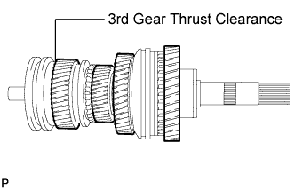 |
Using a feeler gauge, measure the 3rd gear thrust clearance.
| 18. INSPECT 2ND GEAR THRUST CLEARANCE |
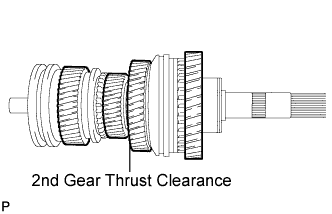 |
Using a feeler gauge, measure the 2nd gear thrust clearance.
| 19. INSPECT 1ST GEAR THRUST CLEARANCE |
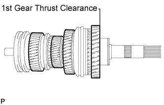 |
Using a feeler gauge, measure the 1st gear thrust clearance.
| 20. INSPECT 5TH GEAR RADIAL CLEARANCE |
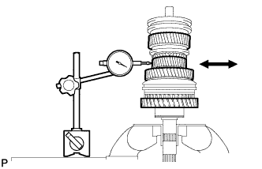 |
Using a dial indicator, measure the 5th gear radial clearance.
| 21. INSPECT 3RD GEAR RADIAL CLEARANCE |
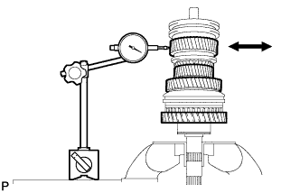 |
Using a dial indicator, measure the 3rd gear radial clearance.
| 22. INSPECT 2ND GEAR RADIAL CLEARANCE |
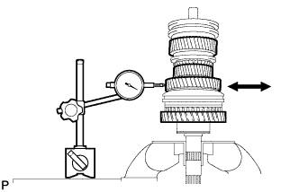 |
Using a dial indicator, measure the 2nd gear radial clearance.
| 23. INSPECT 1ST GEAR RADIAL CLEARANCE |
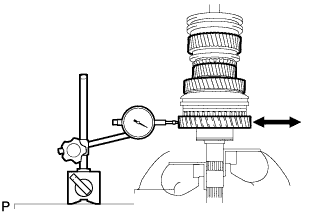 |
Using a dial indicator, measure the 1st gear radial clearance.